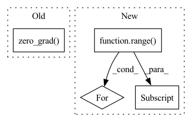

Pattern ID :33408
Before Change
a_dist.log_prob(a_dist.sample()).sum(-1, keepdim=True).clamp(-100.0, 100.0)
)
alpha_loss = -(log_alpha * (logp_a + target_entropy).detach()).mean()
optimizer.zero_grad()
alpha_loss.backward()
optimizer.step()
logs["losses/alpha_loss"] = alpha_loss.item()
logs["alpha"] = log_alpha.exp().item()After Change
with torch.no_grad():
s_rep = agent.encoder(o)
for i in range( agent.ensemble_size):
with torch.no_grad():
a_dist = agent.actors[i](s_rep)
if discrete:
logp_a = (a_dist.probs * torch.log_softmax(a_dist.logits, dim=1)).sum(-1)
else:
logp_a = (
a_dist.log_prob(a_dist.sample())
.sum(-1, keepdim=True)
.clamp(-100.0, 100.0)
)
alpha_loss = -(log_alphas[i] * (logp_a + target_entropy).detach()).mean()
optimizers[i].zero_grad()
alpha_loss.backward()
optimizers[i] .step()
logs[f"losses/alpha_loss_{i}"] = alpha_loss.item()
logs[f"alphas/alpha_{i}"] = log_alphas[i].exp().item()
return logsIn pattern: SUPERPATTERN
Frequency: 3
Non-data size: 4
Instances Fragment ID: 96182571
Project Name: jakegrigsby/super_sac
Commit Name: 819313070dbb7c72886cafb948c401c78eb03861
Time: 2021-10-12
Author: jcg6dn@virginia.edu
File Name: uafbc/learning.py
M Class Name: AnonimousClass
N Class Name: AnonimousClass
M Method Name: alpha_update(9)
N Method Name: alpha_update(9)
M Parent Class:
N Parent Class:
M File Name: uafbc/learning.py
N File Name: uafbc/learning.py
M Start Line: 185
M End Line: 198
N Start Line: 191
N End Line: 211
Before Change
hh_list.append(hh)
preds = torch.stack(output_list, dim=1)
loss = criterion(preds, targets)
optimizer.zero_grad()
loss.backward()
optimizer.step()
p_bar.set_description(f"Loss: {loss.item():.4f}")
return torch.squeeze(preds)After Change
instantaneous_eligibility_trace = torch.zeros_like(param)
grad_outputs = torch.eye(out.shape[-1], device=targets.device)
for g_idx in range( grad_outputs.shape[0]):
param.grad.zero_()
instantaneous_eligibility_trace[g_idx] = torch.autograd.grad(out[:, g_idx] , param, retain_graph=True)[0][g_idx]
eligibility_trace.append(instantaneous_eligibility_trace)
preds = torch.stack(output_list, dim=1)
mean_error = targets - preds Fragment ID: 96182569
Project Name: neurotorch/neurotorch
Commit Name: 4028f8f7fcb44b43d6235c1d12c734f809b1e629
Time: 2022-11-28
Author: 50332514+JeremieGince@users.noreply.github.com
File Name: src/neurotorch/learning_algorithms/debug_e_prop.py
M Class Name: AnonimousClass
N Class Name: AnonimousClass
M Method Name: dummy_train(1)
N Method Name: dummy_train(1)
M Parent Class:
N Parent Class:
M File Name: src/neurotorch/learning_algorithms/debug_e_prop.py
N File Name: src/neurotorch/learning_algorithms/debug_e_prop.py
M Start Line: 51
M End Line: 64
N Start Line: 45
N End Line: 76
Before Change
for i in range(self.current_batch * self.batch_size, batches, self.batch_size):
y_pred = self.model(x[i : i + self.batch_size])
loss = self.criterion(y_pred, y[i : i + self.batch_size])
self.optimizer.zero_grad()
loss.backward()
self.optimizer.step()
self.n_updates += 1
After Change
batch_size = x.size(0) if not self.batch_size else self.batch_size
if self.local_epochs > 0:
for _ in range(self.local_epochs):
for i in range( 0, x.size(0), batch_size):
self._local_step(x[i : i + batch_size] , y[i : i + batch_size])
else:
perm = torch.randperm(x.size(0))
self._local_step(x[perm][:batch_size], y[perm][:batch_size]) Fragment ID: 96182577
Project Name: makgyver/gossipy
Commit Name: 7601b023e9ecd0604a37cf18afd67e14a2044939
Time: 2022-04-29
Author: mak1788@gmail.com
File Name: gossipy/model/handler.py
M Class Name: TorchModelHandler
N Class Name: TorchModelHandler
M Method Name: _update(2)
N Method Name: _update(2)
M Parent Class: ModelHandler
N Parent Class: ModelHandler
M File Name: gossipy/model/handler.py
N File Name: gossipy/model/handler.py
M Start Line: 136
M End Line: 153
N Start Line: 136
N End Line: 145